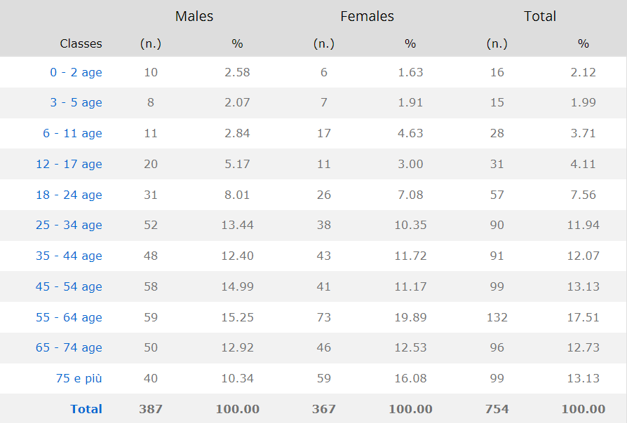
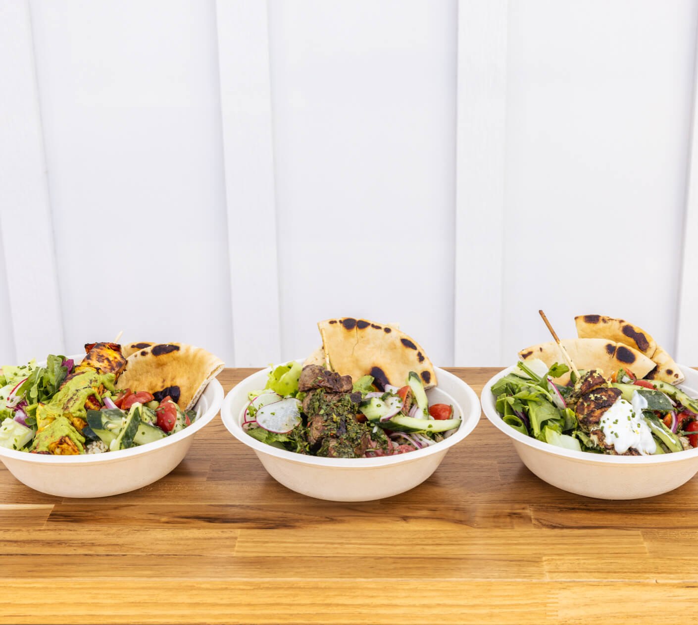
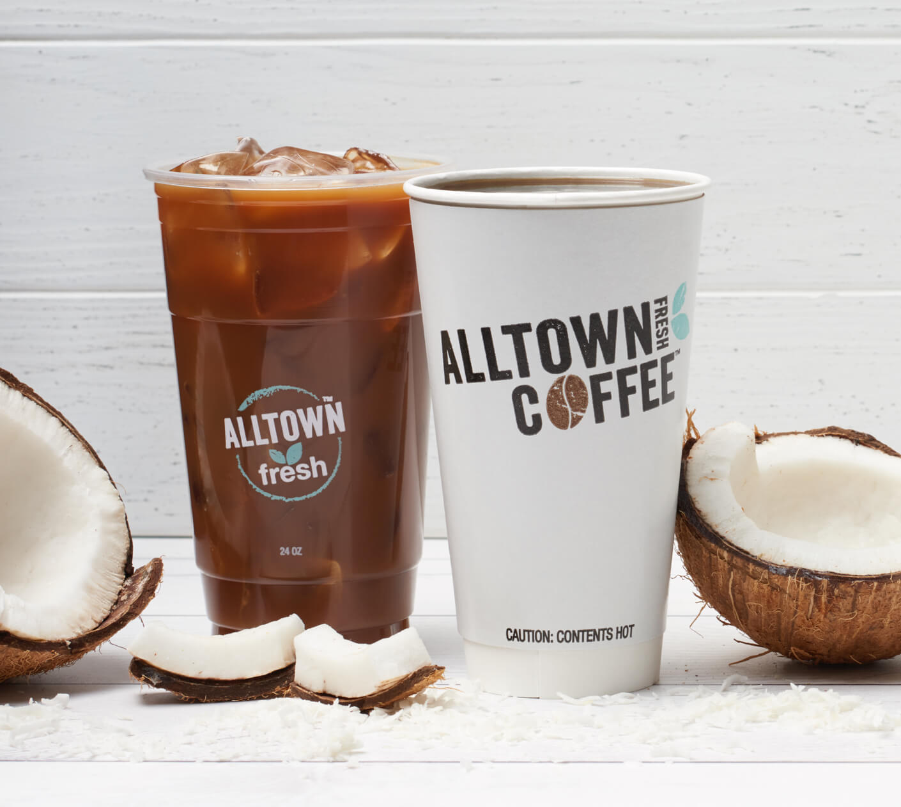
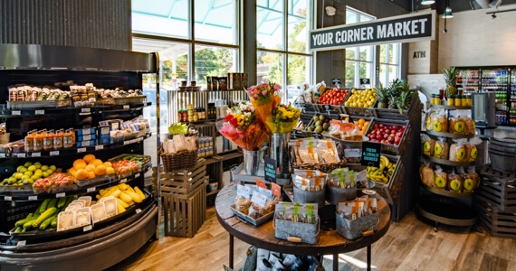

Dan Community Chamber's Statistics
Resident population in the community and its related trend, balance of nature and migratory balance, birth rates, death rates, growth rates and migration rates in Municipality of Dan Community Chamber.
Population as at May, 2022
45% of the populations are Female.
30% of the populations are Male.
15% of the puplations are Children
10% of the population are foreigners/Immigrants.
Territorial extension of Municipality of Dan Community Chamber and related population density, population per gender and number of households, average age and incidence of foreigners are all scanned through.
Age Classes

Total average age of males 30-60 years old.
Total average age of females is 18-40 years old.
Total average of Children are 1-17 years old.
Demographic Balance

Inhabitants on 1th February 2022 - 854
Births - 10
Deaths- 8
Registered- 27
Deleted- 2
Migration- 10
Inhabitants on 31th Dec. 2021 - 840
Processing Trend

2019 Year Inhabitants on Previous Year
2018- 800 Inhabitants
2017- 750 +0.52%
2016- 745 -2.08%
Average annual variation (2018/2019): -0.99
Average annual variation (2016/2017): +0.20.
Population By Age
Age classes per gender and related impact, average ages and old-ages index in Municipality of Dan Community Chamber are totalled and scanned.
Processing Data
Total number of foreigners living in Dan Community are 123 people
= 100% of the foreign population.
There are 40 male foreigners = 55.06% of the foreign population, and 9.81% of the total population in Dan Community.
There are 60 female foreigners = 43.94% of the foreign population, and 7.69% of the total population in Dan Community.
Dan Photo Gallery
Client's choice
Take your meeting or event to the next level with Dan Community Chamber's catering. From charcuterie boards to chilled bowls, we have something unique for every appetite. We have partnered with many organization to make ordering from our catering menu easy. Click here to order online
Pure Coconut Juice
Dan Chamber's Cup of coffee machine is specifically designed to deliver the freshest cup of coffee, pressing instantly right in front of our client for maximum flavor. Now for a limited time, you can enjoy a sweet taste of summer with our coconut coffee..
Salad
Dan Community Chamber offers guests a variety of fresh food choices prepared on site with clean ingredients, including organic, natural, vegan, vegetarian, gluten-free and locally sourced alternatives.
Spicies

Dan Chamber is finally here! The Fresh with Benefits loyalty program and Dan Chamber app are now available. It is free to join, and every dollar you spend goes towards money back in your pocket. .
Kitchen
From fresh baked breads to organic produce and clean, cured meats and fresh/cooked food to bring our clint clean, fresh options that are suited to fit all lifestyles and dietary needs of the masses.
Local Storage
Number of Visits to Page:
Days since last visit: